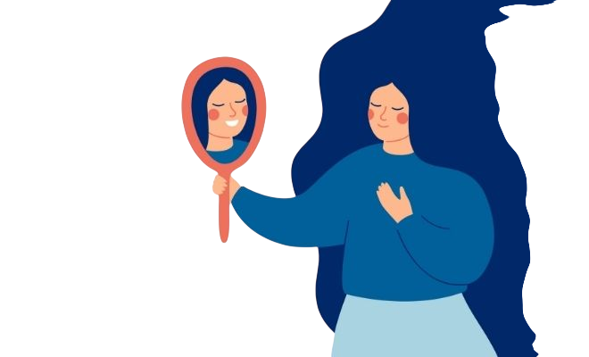
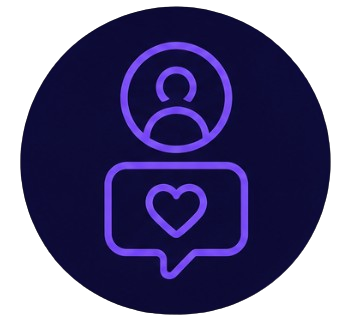
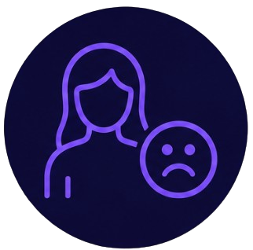

Baja autoestima
Las redes sociales suelen mostrar solo los mejores momentos de la vida. Compararte constantemente con ese contenido puede hacerte sentir que tu vida real no es suficiente.

Tip del día
Recuerda que las redes son un resumen, no la realidad completa. Nadie publica sus días malos con la misma frecuencia que sus logros. Compararte con ese resumen no es justo.
Comparación constante
Mides tu vida contra lo que ves en las cuentas de otros.
Dale la vueltaQué hacer
Pregúntate si esa publicación muestra la vida completa o solo un momento elegido a propósito.

Dependencia de la aprobación
Tu estado de ánimo depende de los likes que recibes.
Dale la vueltaQué hacer
Publica sin revisar las notificaciones inmediatamente. Practica notar cómo te sientes antes de ver la reacción de los demás.

Insatisfacción con tu imagen
Después de ver fotos editadas, sientes incomodidad con tu cuerpo.
Dale la vueltaQué hacer
Sigue cuentas que muestren contenido más real y menos editado. Reducir la exposición ayuda a que tu percepción sea más realista.
Autocrítica frecuente
Te hablas de forma dura después de navegar en redes.
Dale la vueltaQué hacer
Anota una cosa que hiciste bien cada día. Entrenar la atención hacia lo positivo se vuelve más natural con práctica.